Андрей Павличенков и Ольга Головичер
Вернули заброшенному дому работающую функцию музея-гостиницы.

Терем после реставрации, 2018. Фото: Olga Shuklina, CC BY-SA 4.0. Это отреставрированный дом с сохранёнными, заменёнными и воссозданными элементами.
Не с утраченного наличника. Найди три доказательства и увидь, где заканчивается спасение старого дома и начинается новодел.
Короткий маршрут отделён от полной страницы: три последовательных экрана, одно действие на каждом, реальное время — около 3 минут.
Три документальных состояния ставят вопрос. Ракурсы различаются, поэтому это последовательность свидетельств, а не шторка «до/после».

Вода разрушает деревянный дом сверху и изнутри. Поэтому реставратор сначала устраняет причину, а не рисует красивое «после».
Русский синтезированный голос: Дмитрий. Полный текст доступен ниже и в отдельной расшифровке.
С какого повреждения деревянный дом начинает умирать? Не с потери резного наличника. Вода входит через кровлю, добирается до брёвен и превращает красивый силуэт в аварийный сруб. В Асташове дом сначала защитили от воды. Потом разобрали и пронумеровали. Пригодное сохранили и вернули на место, а утраты восполнили только там, где оставалось доказательство. Теперь попробуй сам выбрать правильный порядок спасения.
Четыре остановки ведут взгляд от места к детали. Это не пересказ интерактива.
Поднимай взгляд постепенно: окружение объясняет силуэт, кровля — выживание, сруб — материальную правду, резьба — доказуемое восполнение.
1 · Лес. Терем стоит среди плотного леса. Высокая башня делает дом видимым в большом ландшафте.
2 · Кровля. Пока крыши отводят воду, стены могут жить. Раскрытая кровля запускает скрытое разрушение древесины.
3 · Сруб. Его полностью разобрали и пронумеровали. Пригодные элементы вернули, повреждённые протезировали или заменили.
4 · Резьба. Часть утраченного восстановили по фрагментам и изображениям. Это доказуемая реконструкция, но не уцелевшая материя XIX века.
Вывод. Реставрация начинается не с красоты: сначала причина разрушения, затем сохранение живого материала, потом возвращение доказуемого образа.
1 минута 41 секунда
Русский синтезированный голос: Дмитрий. Расшифровка полностью дублирует звук.
Деталь показывает работу мастера; здание — связь частей; усадьба — человеческий масштаб; лес — причину сильного силуэта.


Сначала сравни два конкретных изображения. Затем, если захочешь, открой весь визуальный словарь эпохи.
Это близкий мотив и общий язык русского стиля 1870-х. Формула «терем построил Ропет» доказательствами не подтверждена.
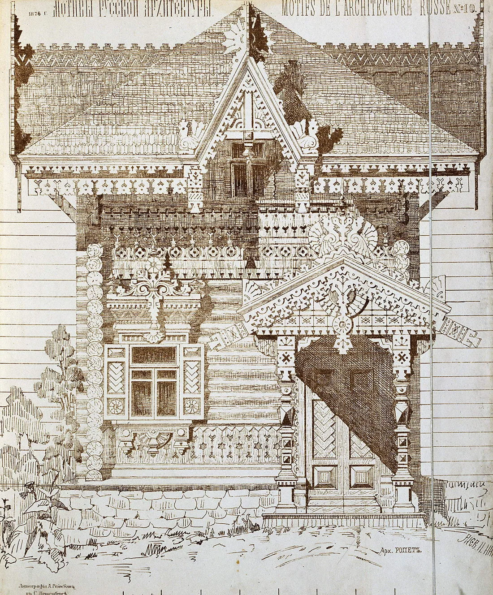
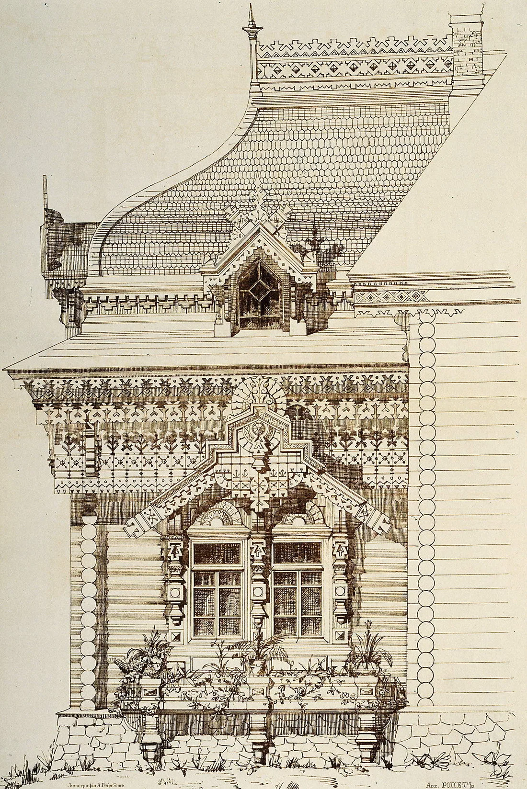
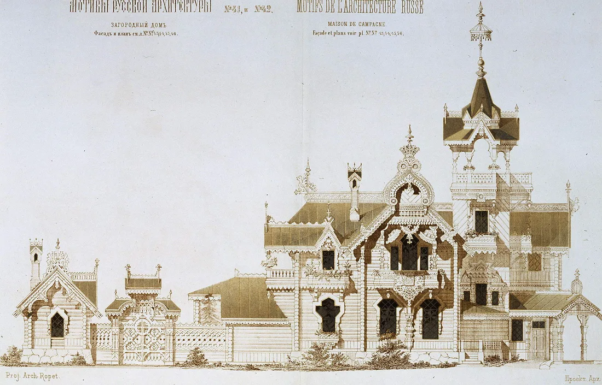
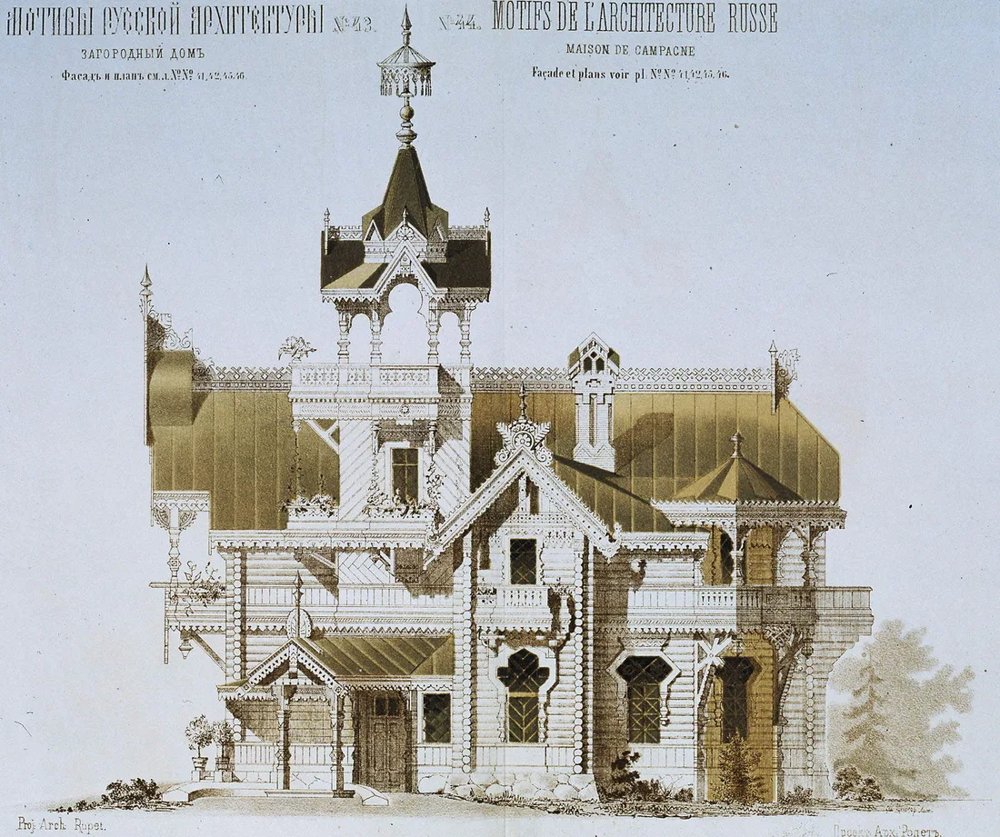
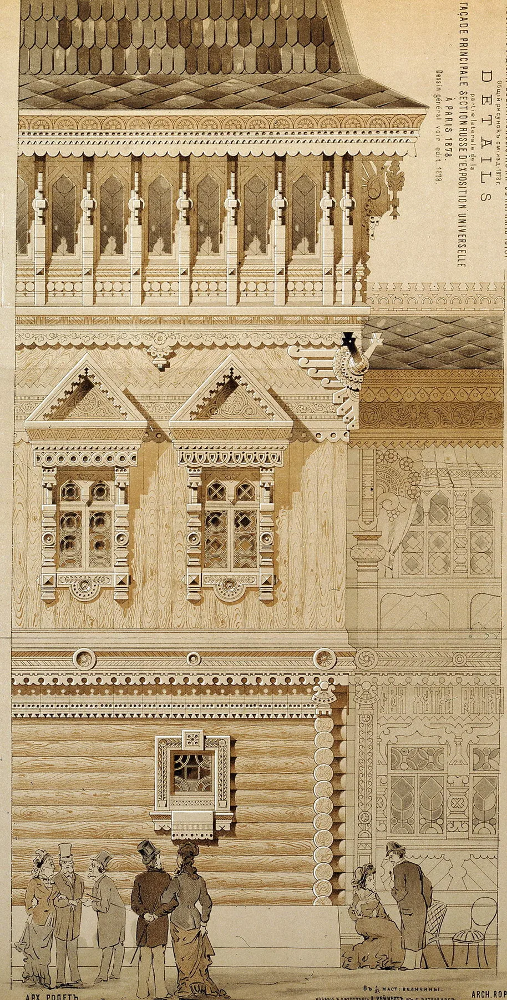
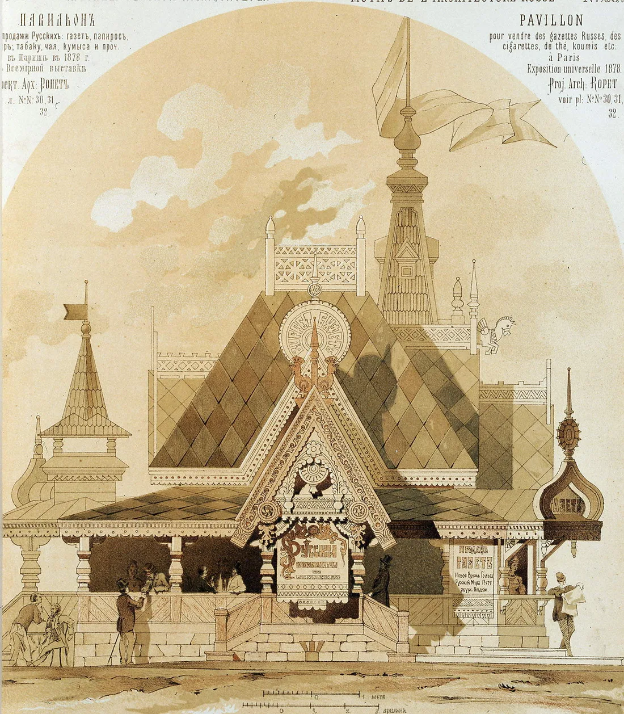
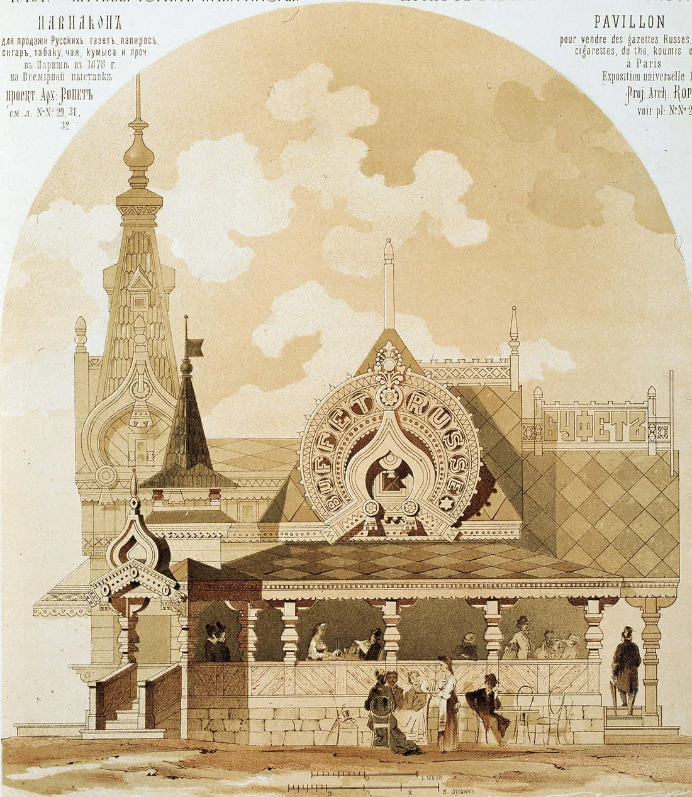
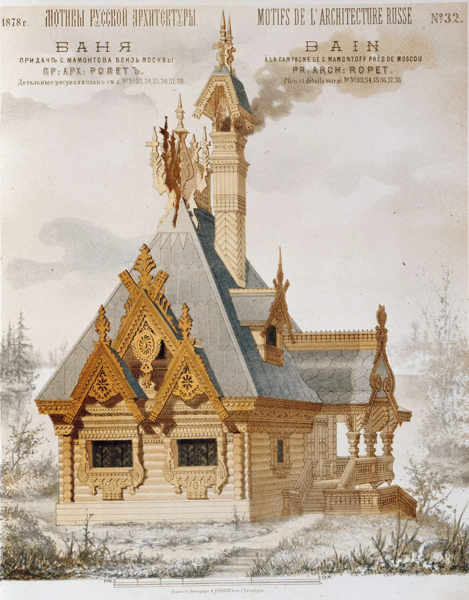
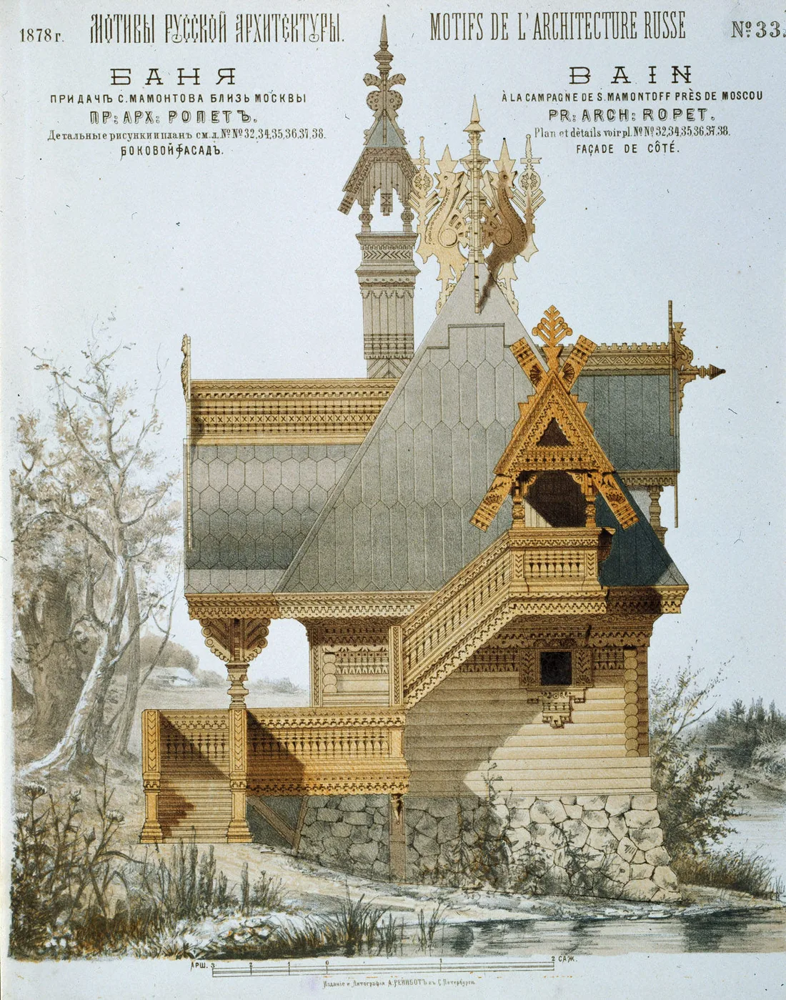
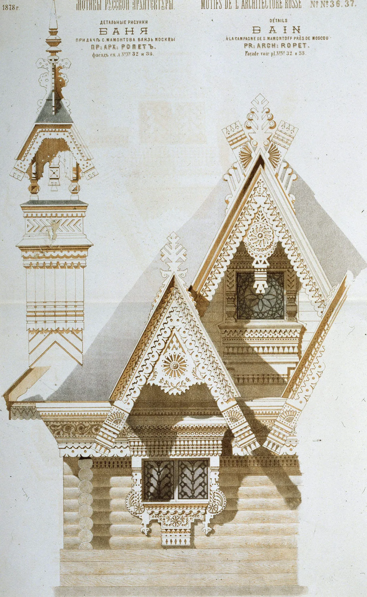
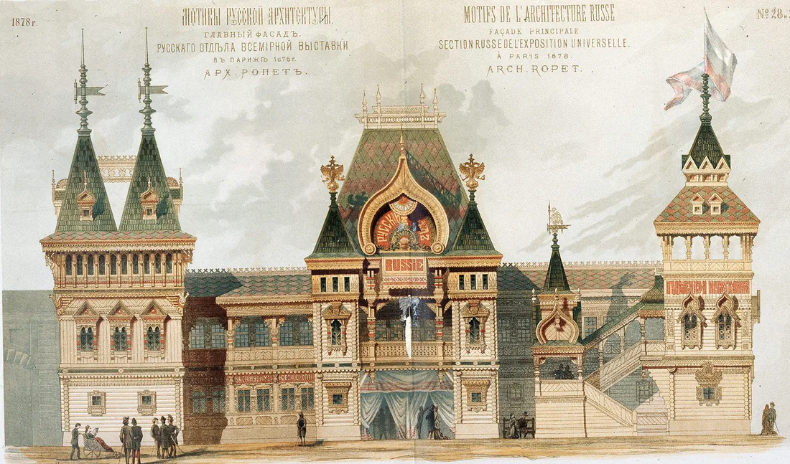
Листы из ежемесячного альбома «Мотивы русской архитектуры». Здесь показаны только работы, подписанные в цифровом источнике именем И. П. Ропета. Это визуальный словарь эпохи, а не доказательство его личного участия в проектировании терема Асташово.
На каждом документальном кадре ищи видимую улику: путь воды, способ сохранить место детали, шов материала и границу реконструкции.

Смотри на кадр 2011 года: вода входит сверху и добирается до сруба.
Найди признак на фотографии, затем выбери его название.
Ты прочитал последовательность не по инструкции, а по дому: причина, память места, судьба материала и документальная граница.
Сначала проследи путь воды по кровле, затем сравни возраст брёвен и только потом рассмотри резьбу.
Официальная ссылка проверена 28 августа 2026 года; условия перед поездкой уточняются на сайте Асташова.
Мартьян Сазонов был крестьянином-отходником — уезжал на заработки и вернулся с деньгами на большой дом. Терем стал не безымянной «русской сказкой», а личным высказыванием о заработанном успехе.

Точная дата завершения дома неизвестна; 1897 год используется как принятая датировка, а не как точный день. Отдельные детали восходят к опубликованному в 1877 году эскизу, связанному с кругом Ивана Ропета.
Граница атрибуции: доказательств личного участия Ропета нет. Формула страницы — «по мотивам опубликованного эскиза», а не «дом архитектора Ропета».
Историческая фотография семьи, автор не установлен; общественное достояние.Документальный пересказ по официальной истории Асташова и карточке АРХИWOOD: без вымышленной прямой речи, но с именами, решениями и источником.
Вернули заброшенному дому работающую функцию музея-гостиницы.
Сруб разобрали, промаркировали и собрали после отбора пригодной древесины; около 50–60% старых деталей удалось сохранить.
Последовательность работ, старые и новые брёвна и источниковое восстановление утрат.
Не точный день завершения.
Учреждения, затем забвение.
Разборка, отбор, сборка и реконструкция.
Признание проекта профессиональным сообществом.
Факт: сруб полностью перебирали; сохранилось около 50–60% оригинальных деревянных деталей. Атрибуция: детали связаны с опубликованным эскизом круга Ропета, но личное авторство не доказано. Музейное прочтение: различия старого и нового — не дефект вида, а главное свидетельство метода.
Критический вопрос — судьба каждого бревна и доказательство для каждой утраченной части.
Здесь важны не только материалы отдельных домов, но и группы построек, дороги, каналы, лес и совместная практика ремонта кровель.
Карточка UNESCO →Сходство деревянного материала не доказывает заимствование. Сравнивается принцип сохранения: отдельный спасённый объект и живая историческая среда.
Сначала выбери соседний выпуск. Полный январь остаётся доступен по желанию.
На месте начни с кровли, затем ищи различия в срубе и только после этого смотри на резьбу.
В Асташове старый материал входит в современную жизнь; в Коломенском утраченное здание читают по документам и современной реконструкции.